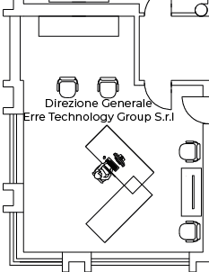

<map name="image_map">
  <area alt="" title="1" href="/Workstation" coords="61,46 91,46 91,120 61,120 61,88 45,89 45,72 61,72 " shape="polygon" (click)="setWorkstationInSession('dir-erre-tech', 1)">
</map>
